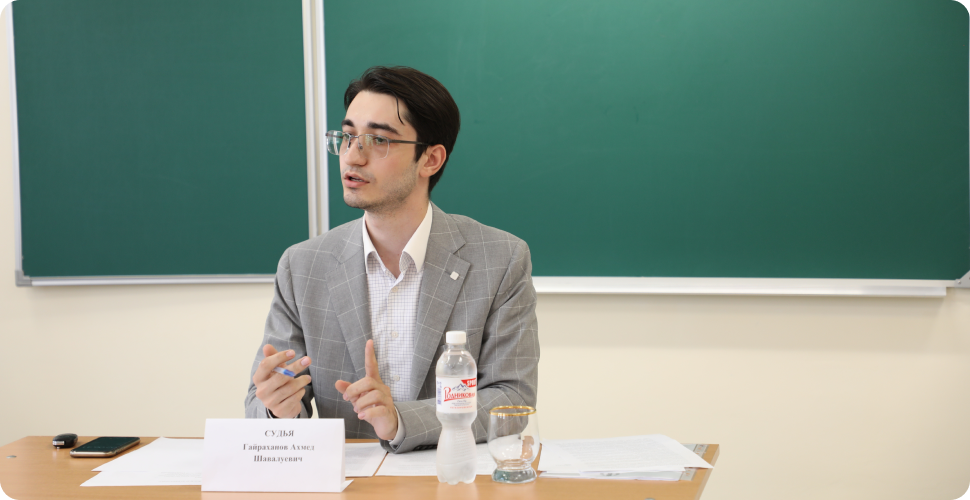
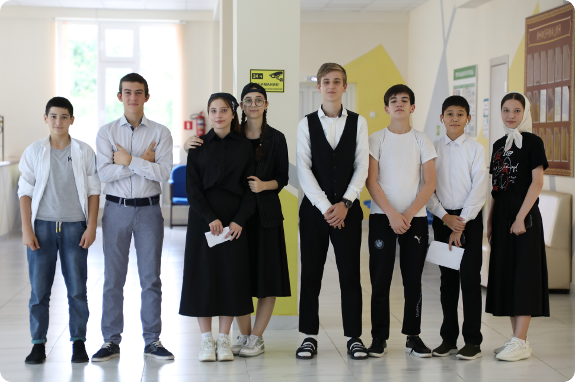
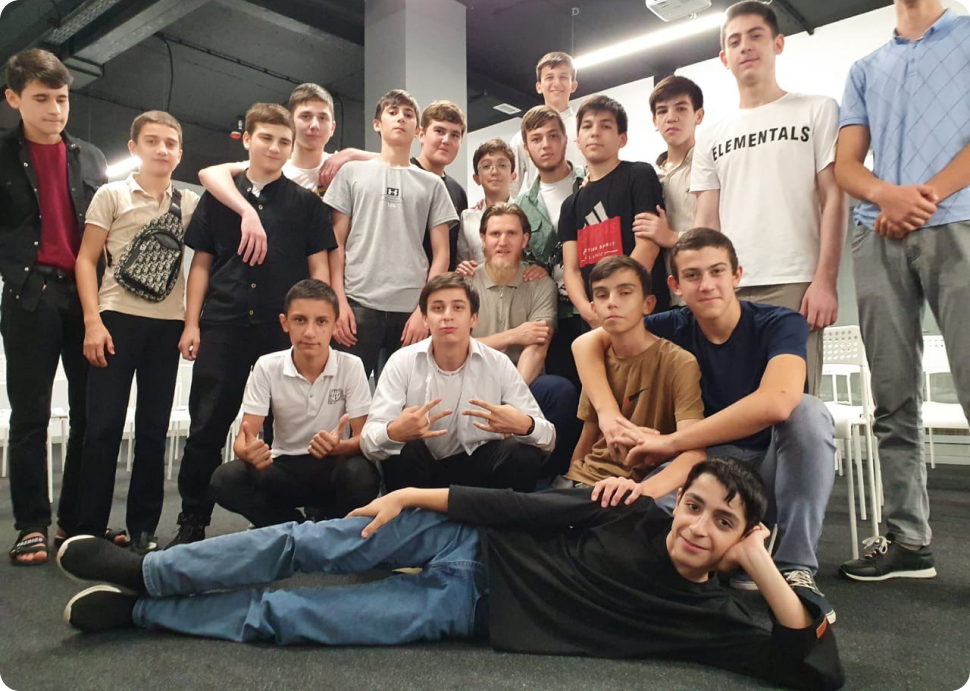
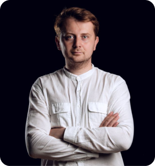

С чего всё началось? 

Нашей Фаризе как-то в соцсетях написали: «Я в выпускном классе, но не знаю куда поступать. Что делать?»
На что она ответила:
Дать себе год на размышления и поиск «своего дела».
-
Обратиться к специалистам из разных областей, чтобы они не только рассказали о профессии, но и показали какие реальные задачи нужно выполнять в рабочем процессе, рассказали о плюсах, минусах и личностных качествах, которые необходимы в конкретной профессии. Рассказали о своём опыте.
После этого Фариза стала размышлять: «разве школьник сможет отыскать представителей нескольких профессий и убедить их уделить ему столько времени, даже при помощи взрослых? Профессий то много. И ещё эта проблема есть не только конкретно у этого школьника/школьницы. А что если нам собрать детей, пригласить спикеров из самых разных сфер и организовать площадку по профориентации для отобранных школьников? Дать им реальные кейсы, которые они решат с помощью специалистов. Организовать выезды непосредственно на рабочие места?»
Из этих вопросов и возникла идея нашего проекта «Специалист выпускнику», которую мы оформили и подали в Фонд президентских грантов. Проект выиграл, и мы организовали проектную смену!
О проектной смене
Первой частью проекта стала проектная смена в Центре одаренных детей «Ахмат», где 55 учащихся на протяжении 3-х недель общались с более 60-тью специалистами из самых различных профессий, участвовали в 5 выездных экскурсиях, примеряли на себя роль юристов в судебных дебатах, работая совместно со студентами Юридической клиники ЧГУ, обучались техническим и инженерным навыкам.
Проект "Профориентационная смена "Специалист выпускнику", поддержанный Фондом президентских грантов
Сюжет ЧГТРК "Грозный" о проекте ИН-форматио "Профориентационная компания "Специалист выпускнику"

Идея с платформой
Создание платформы вошло во вторую часть реализации проекта «Специалист выпускнику». Мы понимали, что на смену попадут только единицы, а школьников с проблемой выбора профессии тысячи.
Так мы решили, что сделаем платформу, где школьники смогут найти для себя ответы на вопросы непосредственно от специалистов той или иной профессии. Большое количество профессионалов с радостью согласились поделиться своим опытом и мыслями с учениками, а мы в свою очередь оформили их знания в полезные статьи и видеоматериалы, и теперь делимся ими, размещая на этом сайте.

Команда проекта
-

Хазбиев Тимур
Генеральный директор АНО «НКЦ «ИН-форматио»
-
Юсупова Адат
Преподаватель Юридического факультета ЧГУ им. А.А. Кадырова
-
Каимова Фариза
Frontend разработчик в IT-компании Thesis. Frontend разработчик и преподаватель в международной IT-компании «Expovision»